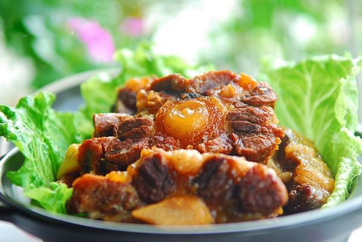

Cùng bắt tay làm thử thôi nào!
nguyên liệu:
- 700g đuôi bò
- Gừng và tỏi thái lát mỏng
- 1 mẩu quế nhỏ
- Vài bông hoa hồi
- 1 muỗng canh rượu trắng
- 1 muỗng canh nước tương
- 1 muỗng canh nước hàng (nước mầu)\
- Đường
- Tiêu hạt
- 1 lon bia
Cách làm:
- Đuôi bò rửa qua, ngâm trong nước nửa giờ hoặc hơn cho ra bớt tiết, thỉnh thoảng thay nước cho đến khi thấy nước trong, đuôi bò sạch tiết thì vớt ra. Chặt đuôi bò thành từng khúc nhỏ, trút vào nồi, đổ nước ngập mặt, thêm vài lát gừng vào đun sôi thì tắt lửa, thêm rượu trắng rồi đun sôi lại khoảng 3 phút. Thao tác này giúp khử mùi hôi đặc trưng của thịt bò, giúp món ăn với đuôi bò thơm ngon hơn. Sau đó, đổ ra rổ, rửa đuôi bò lại một lần nữa cho thật sạch.
- Đun nóng chảo với chút dầu ăn, trút đuôi bò vào đảo nhanh tay, thêm tỏi và phần gừng lát còn lại vào đảo thơm.
- Thêm chút rượu trắng cùng quế, hồi, tiêu hạt vào, tiếp tục đảo đều.- Sau đó mới đổ hết lon bia vào nồi đuôi bò, thêm nước tương, đường, nước hàng, đảo đều rồi trút toàn bộ vào nồi áp suất.
- Khi nồi áp suất bắt đầu thoát hơi, vặn nhỏ lửa, đun trong khoảng 12 phút là được. Tùy khẩu vị, nếu bạn thích ăn mềm hơn thì tăng thời gian đun thêm chút nữa. Ngoài ra, bạn cũng có thể thêm cà rốt, khoai tây hay hành tây tùy thích.
- Món đuôi bò được khá nhiều người yêu thích, nhất là các đấng mày râu. Vào những ngày trời lành lạnh, thưởng thức món bò hầm bia nóng hổi, thơm phức thì ngon tuyệt. Đuôi bò chín mềm, ngấm gia vị mặn ngọt vừa ăn và thơm nức mùi gừng, quế, hồi, cộng thêm chút cay ấm của gừng, tiêu thật dễ chịu. Vị ngon, mềm của phần đuôi bò và vị dẻo thơm của phần gân bò chắc chắn sẽ chinh phục vị giác của những thực khách dù khó tính nhất.
- Món này dùng nóng với cơm thì thực sự rất “hao” mà làm món nhậu thì cũng rất hợp. Ngoài ra, phần nước hầm sánh vàng quyến rũ cũng có thể dùng trộn bún khá ngon. Vì phần nước này hơi béo nên khi dùng trộn bún bạn sẽ phải ăn kèm với rau sống và đồ chua cho bớt ngán. Tuy có mất công làm một chút nhưng khi thưởng thức thì thấy bõ công lắm đấy!
Chúc bạn thành công và ngon miệng với món đuôi bò hầm bia nhé!